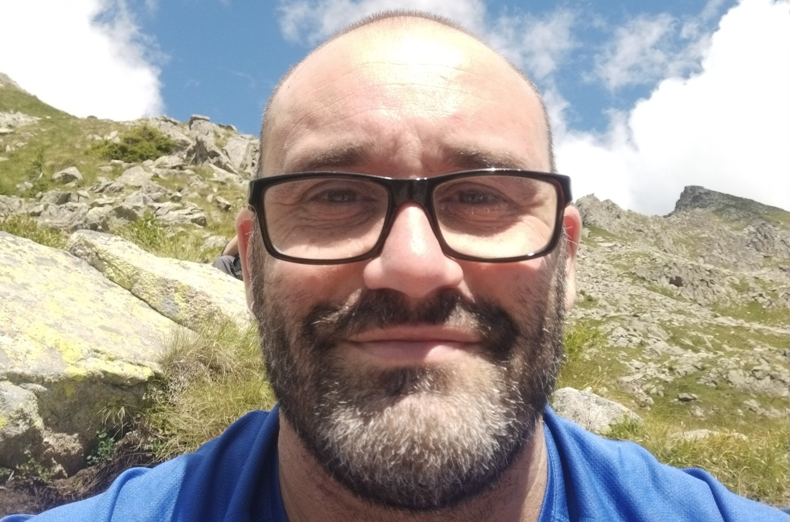
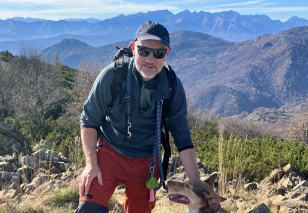
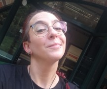

Le persone dietro i dati
Un gruppo interdisciplinare tra ecologia, genomica e bioinformatica. Clicca su una persona per leggerne il CV.

PIDr. Alex Laini
Responsabile della ricerca Leggi il CV ↓
LAB MANAGERDr. Samuele Voyron
Supervisione attività di laboratorio Leggi il CV ↓
POST-DOCDr. Laura Gruppuso
eDNA e metabarcoding di invertebrati Leggi il CV ↓Dr. Gianluca Natta
Analisi di batteri e funghi Leggi il CV ↓Chi siamo
Dr. Alex Laini
Responsabile della ricercaDottorato in ecologia, attualmente è ricercatore in zoologia all’Università di Torino. Specializzato in conservazione degli ambienti acquatici, dal 2018 sviluppa e applica metodi di monitoraggio di invertebrati acquatici basati sul DNA metabarcoding. Si occupa di disegno sperimentale, analisi dati, bioinformatica e sviluppo di collaborazioni con enti di gestione dei bacini idrici.
Dr. Samuele Voyron
LAB MANAGERGenomico ambientale specializzato in metabarcoding di procarioti e funghi provenienti da diverse matrici ambientali.
Dr. Laura Gruppuso
POSTDOCPostdoc, specializzata in bulk metabarcoding e DNA ambientale come strumento per il monitoraggio della biodiversità acquatica.
Dr. Gianluca Natta
POSTDOCPostdoc, specializzato nello studio del microbiota dell'apparato digerente degli insetti.